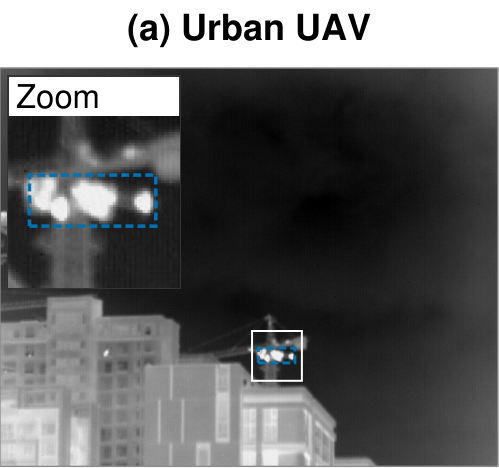
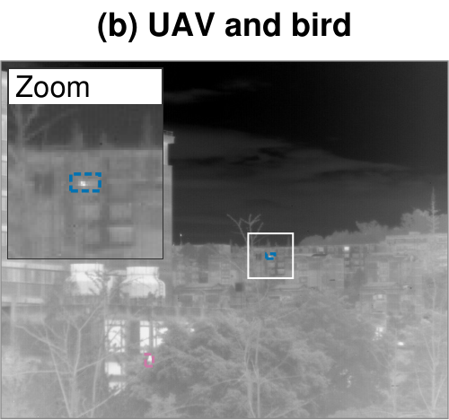
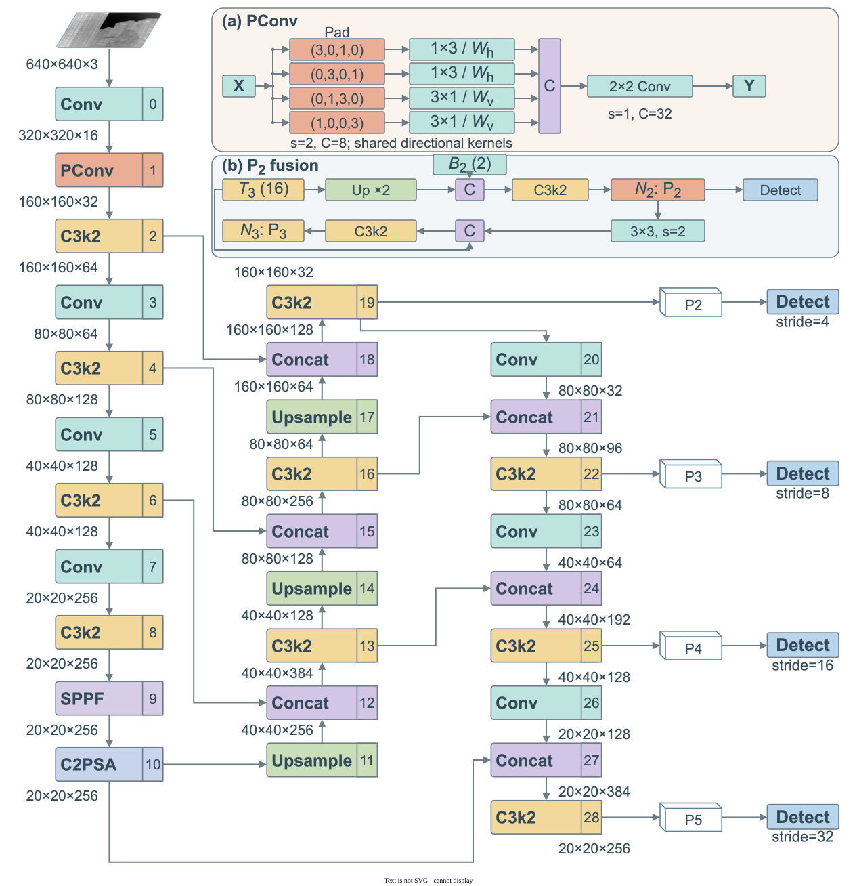
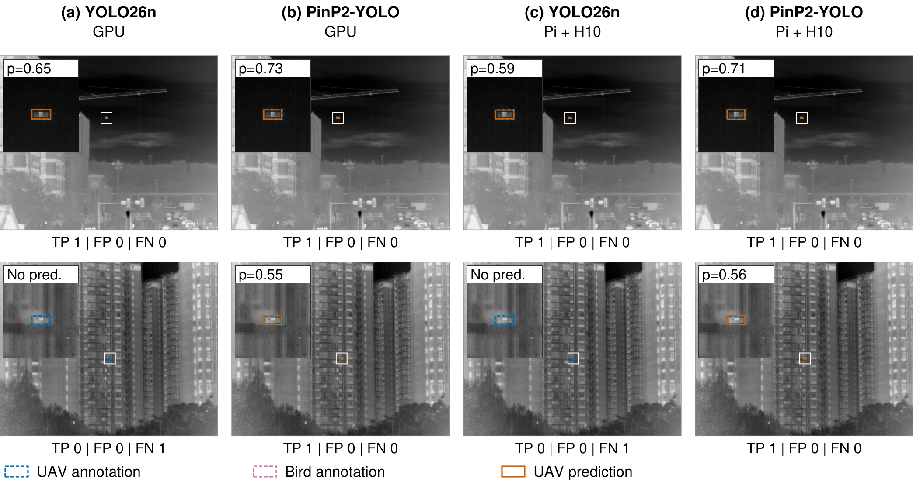
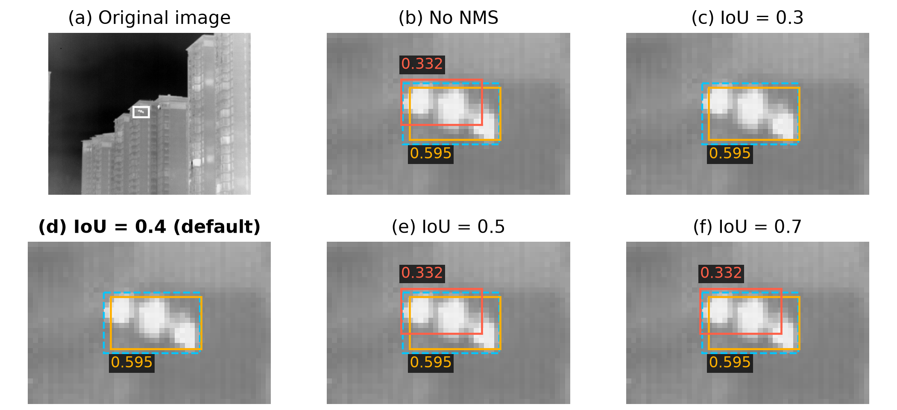
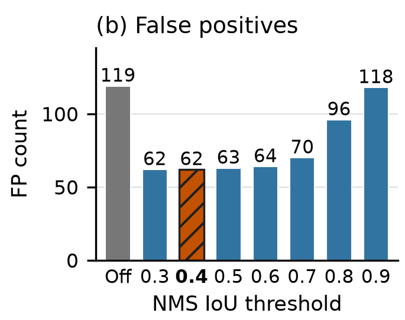
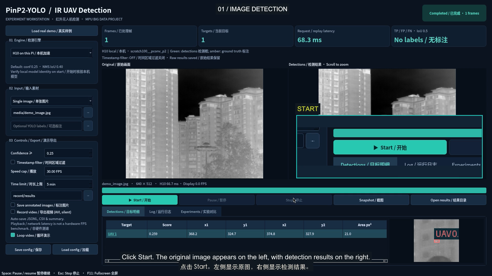

COMP6132 Introduction to Big Data
PinP2-YOLO
Infrared UAV Detection with Directional
Features and P2 Fusion
Yaorong Huang · Chunshen Yu · Yifan Zhai · Zhiwen Luo
Macao Polytechnic University
Background and Dataset


Can we detect a UAV when it occupies only a few infrared pixels?
- Unauthorized flights at night or in low visibility motivate infrared UAV detection.
- Small targets, weak contrast and background clutter make detection difficult.
- SIRST-UAVB: 1,999 training images, 500 validation images and 486 validation UAV boxes.
Yaorong Huang · Chunshen Yu · Yifan Zhai · Zhiwen Luo
Data Preparation and Quality Control
- Raw
3,000 - Check
labels - Filter
2,499 - Group
and split - Export
YOLO labels
Duplicate images and conflicting labels would make the validation score unreliable.
- Check readable images, label pairs, classes and bounding-box coordinates.
- Remove 494 pixel duplicates and isolate 7 label conflicts.
- Freeze a seed-42 split grouped by inferred background view. Export normalized UAV labels.
From YOLO26n to PinP2-YOLO

Two changes preserve more detail near the input.
- PConv replaces one shallow convolution and samples in different directions.
- P2 fusion adds a stride-4 prediction branch for small objects.
- 2.516M parameters in the final native graph.
Comparison with Baseline Models
| Model | Params (M) | AP50 | AP50:95 |
|---|---|---|---|
| YOLO26n | 2.504 | 65.76% | 27.95% |
| YOLO11n | 2.590 | 68.14% | 27.04% |
| YOLOv8n | 3.011 | 71.43% | 26.63% |
| PConv + SD (v8n-P2) | 2.928 | 76.58% | 32.93% |
| PinP2-YOLO | 2.516 | 69.61% | 31.27% |

PinP2 improves on YOLO26n with a small increase in parameters.
- Same frozen validation set and native metric definitions. Runs use 100 epochs from scratch.
- PConv + SD scores higher on native AP. Edge speed and conversion also informed our choice.
Ablation Study: PConv and P2
+3.322 pp over YOLO26n with both changes.
- PConv alone lowers AP by 3.571 points.
- P2 alone raises AP by 2.023 points.
- One seed and different physical batch sizes limit the causal interpretation.
Edge Deployment: Raspberry Pi 5 + HAILO10H
- Export
ONNX - Compile
HEF - Infer
Pi 5 + H10 - Decode
and NMS
| Images | 125 | 250 | 500 |
|---|---|---|---|
| Mean time | 5.570 s | 11.121 s | 22.261 s |
Measured 22.89 ± 0.01 FPS on the tested image pipeline.
- Final H10 AP50:95 31.740% with NMS 0.4. HEF size 4.02 MiB.
- Historical workload run: 22.44–22.48 FPS, peak RSS 80.64–85.45 MiB.
- Device benchmark and GUI display rate measure different work.
Effect of Training Data Scale
AP rose from 16.353% with 500 images to 31.274% with 1,999.
- Same model, 100 epochs, physical batch 8 and seed 42.
- Larger subsets also receive more training steps at fixed epochs.
- Repeat with more seeds and matched training steps to test the trend.
Post-processing Optimization: NMS IoU = 0.4


False positives fell from 119 to 62.
- The boxes in Fig. 4 overlap at IoU ≈ 0.468. At 0.4, NMS removes the lower-scoring duplicate. At 0.5, both remain.
- 0.4 was the largest tested threshold with 62 false positives and unchanged recall.
- TP 323 and FN 163 stayed fixed.
Offline VLM-assisted Candidate Verification
| Policy | TP | FP | FN | Recall |
|---|---|---|---|---|
| Original (E0) | 323 | 119 | 163 | 66.46% |
| Threshold only (E1) | 184 | 11 | 302 | 37.86% |
| All context (E2) | 1 | 0 | 485 | 0.21% |
| Selective context (E3) | 184 | 12 | 302 | 37.86% |
| Selective local (E4) | 183 | 12 | 303 | 37.65% |
At equal recall, confidence filtering had one fewer false positive.
- Qwen2.5-VL-3B-Instruct reviewed selected candidate crops on a GPU.
- Tiny targets and domain differences may limit what the verifier can see.
- The deployed H10 pipeline uses detection and NMS.
Conclusion and Future Work
- Native validation AP50:95
- 31.274%
- H10 AP50:95 with NMS 0.4
- 31.740%
- H10 benchmark throughput
- 22.89 FPS
Native and H10 results use separate evaluation paths.
- P2 with PConv outperformed the baseline. Native AP increased across the three training sizes.
- NMS reduced duplicate detections. The tested VLM added no benefit over thresholding.
- Next: improve tiny-target recall and labels, run multiple seeds and validate on independent continuous video and new domains.
GUI Demonstration

PinP2-YOLO detection workbench
The recording shows image and video inputs, detection results, and playback controls.
The replay loops infrared stills to demonstrate the workflow. An independent continuous-video evaluation remains future work.
Thank you
Questions & Discussion